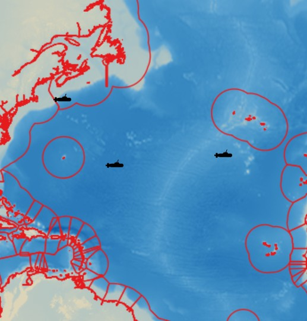

My Projects
A web map displaying Allegheny County, PA food inspection violations. Updated daily via a Python script.

A web map showing the owner of each street in Pittsburgh.

A web map showing the locations of nuclear submarine sinkings around the world. Fully open source.

3rd Place map gallery winner at CMU GIS Day 2025. A static map showing the results of a solar energy suitability analysis.